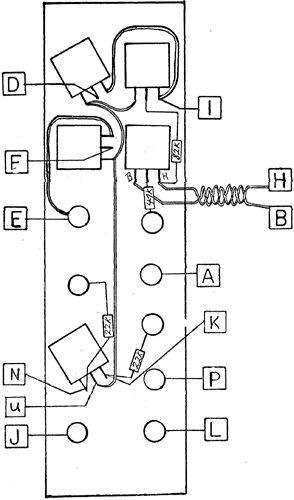

|
Variable Slope Filter Wiring Diagram
 TEST PROCEDURE: 1. Apply a sawtooth wave from an oscillator or slew to IN-1 and turn the mix input pot fully CCW. Turn the SLOPE pot fully CCW. While listening to each of the outputs, LOW, BAND, and HIGH, vary the frequency pot. The operation of the filter should be evident. Perform the same test with the input applied to IN-2 and the mix pot turned fully CW. 2. Listen to the BAND output with the sawtooth wave applied to the input and increase the slope the filter with the pot. As the frecruency of the filter is varied, the increasing slope effect should become evident. Test the VC functions of both the frequency and slope. Note the processing input as well as a pre-scaled IV/octave input for frequency control. NOTE; Long resistor leads should be covered by Teflon tubing where there is the possibility of shorting against other wires, terminals, or the metal panel. The two wires to pads H and B should be twisted loosely together. RESISTOR COLOR CODE
47k- Yellow-Violet-Orange-Gold
|